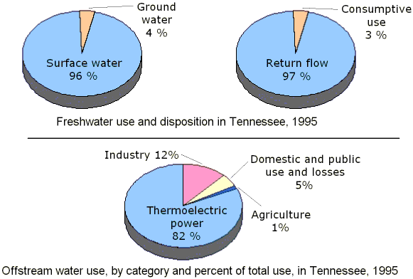

Availability of water
Availability of water

- Water is constantly moving on the Earth between the atmosphere, ocean, rivers and streams, snowpacks and ice sheets, and underground.
- Water availability, both as surface water and groundwater, is essential for agriculture, human consumption, industry, and energy generation.
Availability of water in the world

- 3% of the earth's water is fresh. 2.5% of the earth's fresh water is unavailable
- locked up in glaciers, polar ice caps, atmosphere, and soil; highly polluted; or lies too far under the earth's surface to be extracted at an affordable cost.
- 0.5% of the earth's water is available fresh water.
Availability of water in India

- Less than 50 per cent of the population in India has access to safely managed drinking water.
- Groundwater from over 30 million access points supplies 85 per cent of drinking water in rural areas and 48 per cent of water requirements in urban areas.